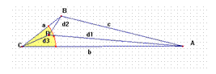
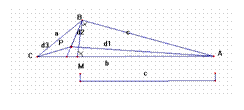
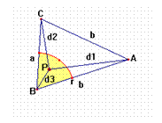
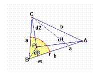
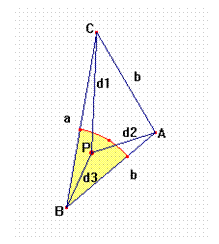
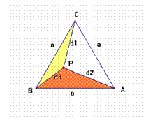

77.- Una caracterización del triángulo equilátero
B. 3566. Por cada punto P interior de un triángulo dado ABC, puede construirse un triángulo con los segmentos PA, PB y PC. Demostrar que ABC es equilátero
Ampliación del editor: Demostrar que en un triángulo equilátero ABC, si P es un punto interior cualquiera, los segmentos PA, PB y PC pueden construir un triángulo.
Propuesta de definición: Un triángulo es equilátero si tomado un punto interior P cualquiera, se puede construir con PA, PB y PC un triángulo.
New exercises and problems in Mathematics
September 2002
Solución de Ramón Trigueros Reina, Profesor
del IES Miguel de Mañara de San José de la Rinconada y Profesor
Asociado del Dpto. de Didáctica de las Matemáticas, Universidad
de Sevilla
Probamos en primer lugar que en cualquier triángulo que tiene dos lados desiguales existen puntos interiores con cuyas distancias a los vértices no se puede construir un triángulo.
Si a; b; c son los lados del triángulo, distinguimos tres casos: 1º a<c<b (los tres lados desiguales); 2º a < b = c; y 3º a = b < c.(triángulos isósceles)

Sea r = mínimo (b – c , c – a); y además
Tomemos el entorno del plano de centro el vértice C y radio r intersección con el triángulo. Esto no es vacío puesto que r >0. Sea P un punto de este entorno relativo, y d1, d2 y d3 las distancias respectivas a los vértices A, B y C.
En esta situación la distancia d2 es menor que a. ya que d2 <d2’ ; siendo d2’ la prolongación de d2 hasta cortar el lado AC en M.

La situación extrema es que r = b – c y el triángulo BMA sea isósceles cuyos ángulosB = M < pi/2. En este El lado C B(a) del triángulo CBM es opuesto a un ángulo mayor que un recto lo que significa que ha de ser el mayor del triángulo. Para cualquier otro punto Mi sobre el lado AC más próximo a C se forma un triángulo CBMi cuyo lado CB(a) siempre es opuesto a un ángulo mayor que un recto ya que en el triángulo MiBA la suma de lo ángulos Mi + B es constante y el ángulo B se hace cada vez mayor por tanto Mi cada vez que nos acercamos a C menor. Este ángulo visto en el triángulo CBM es cada vez mayor por ser el suplementario. En definitiva d2 < d2’ < a
Volvemos al triángulo primitivo y considerando los triángulos que forman las distancias a los vértices con el lado formado por dichos vértices y utilizando las propiedades triangulares obtenemos d3 + d2 < b – c + a = b + c – a = b – (c – a) < b – d3 < d1. Y por tanto no se podría formar un triángulo con estos tres valores, d1, d2 y d3.
En el segundo caso a < b = c; Por tanto b – a > 0. Ha de existir un número natural n tal que . Tomemos .

Tomamos el entorno en las mismas condiciones que en el caso anterior para este valor de r, que es mayor que cero, y por tanto existen puntos del triángulo en el entorno.En este caso d2 también es menor que a. Basta construir el triángulo isósceles llevando el lado BC sobre BA y considerando d2’ la prolongación de d2 sobre M en el lado AB.

En un triángulo isósceles de ángulos agudos cualquier segmento entre un vértice y un punto del lado opuesto es menor que el lado repetido. Y de aquí a > d2’ > d2Procedemos a un razonamiento análogo al primer caso:
lo que significa que no se puede formar un triángulo con estos valores.
Tercer caso a > b = c . De forma análoga al caso anterior existe un n, natural tal que y tomamos

En este caso es muy similar al anterior, d2 < b ( la distancia desde el vértice formado por los lados iguales a cualquier punto del triángulo isósceles es menos que los lados iguales)
Podemos concluir por tanto que si un triángulo tiene al menos dos lados desiguales, existen puntos interiores a él, con cuyas distancias a los vértices no se puede formar un triángulo.
Probemos ahora que con las distancias a los vértices desde cualquier punto interior a un triángulo equilátero se puede formar un nuevo triángulo. Para ello veamos que verifican la desigualdad triangular.

Consideramos los triángulos ABP; ACP y BCP.Se verifica por tanto
d1 + d2 > a > d3
d3 + d2 > a > d1
d1 + d3 > a > d2
(En un triángulo equilátero la distancia desde un punto interior a un vértice siempre es menor que el lado)
Por tanto con los valores d1, d2 y d3 se puede formar un triángulo.